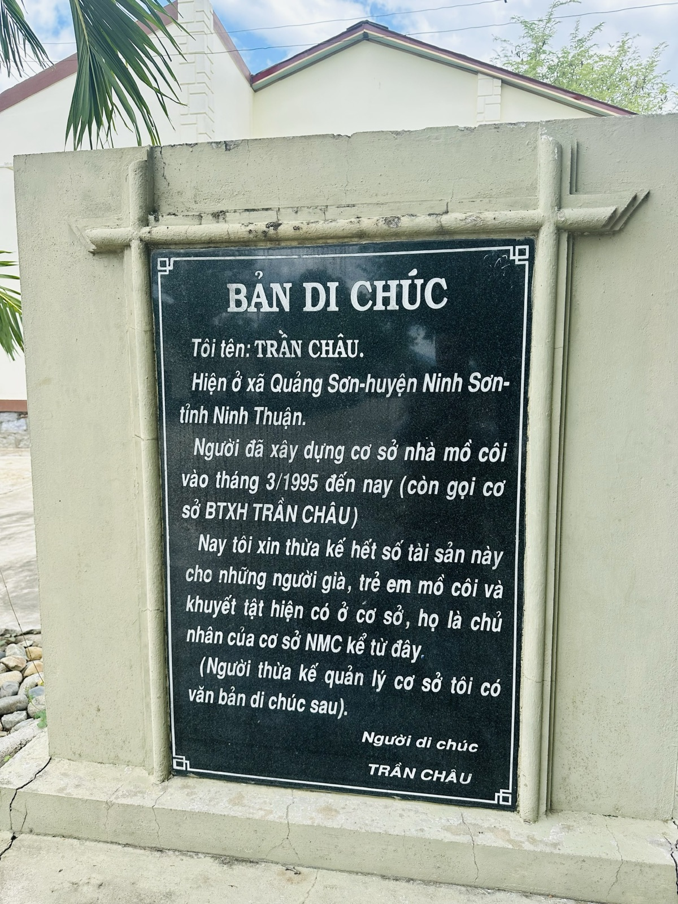
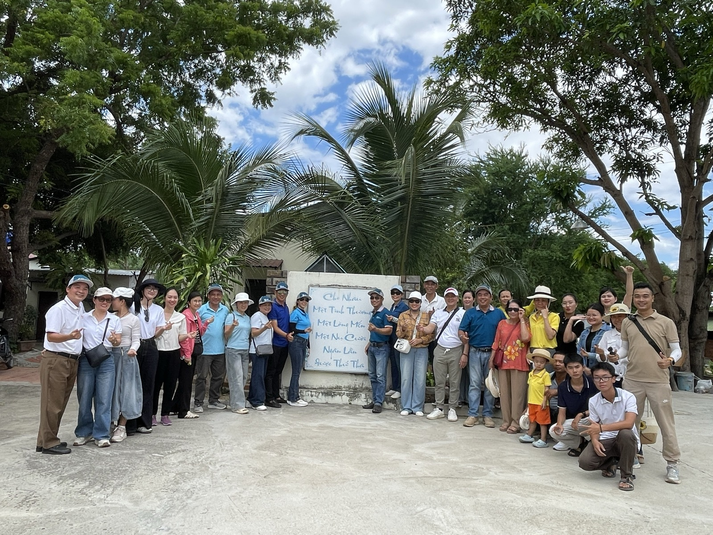

Một người viết di chúc khi còn khoẻ — và tạc nó lên đá
Cuối tháng 8, tôi đi cùng một nhóm thiện nguyện tới một cơ sở bảo trợ xã hội ở Ninh Thuận cũ. Về nhà rồi, thứ đọng lại trong đầu tôi không phải cảnh đẹp trên đường đi, cũng không phải không khí của cả đoàn. Mà là một tấm bia đá, đứng lặng ở một góc sân.

Nguyên văn tấm bia — không phải bản sao, không phải trích đoạn.
Một tấm bia không giống những tấm bia khác
Cơ sở bảo trợ xã hội Trần Châu do chính ông Trần Châu xây dựng từ tháng 3/1995 — một mái nhà cho người già neo đơn, trẻ mồ côi và người khuyết tật. Gần ba mươi năm sau, ông cho khắc lên đá một bản di chúc, đặt ngay trong khuôn viên. Tôi xin chép nguyên văn:
"Tôi tên: Trần Châu. Hiện ở xã Quảng Sơn - huyện Ninh Sơn - tỉnh Ninh Thuận. Người đã xây dựng cơ sở nhà mồ côi vào tháng 3/1995 đến nay (còn gọi cơ sở BTXH Trần Châu). Nay tôi xin thừa kế hết số tài sản này cho những người già, trẻ em mồ côi và khuyết tật hiện có ở cơ sở, họ là chủ nhân của cơ sở NMC kể từ đây."
Đọc xong tôi đứng im khá lâu. Một bản di chúc thường được cất trong tủ, niêm phong, chỉ mở ra khi người viết không còn nữa. Còn tấm bia này công khai, tạc lên đá, đứng giữa sân — cho tất cả mọi người đến đây đều đọc được, ngay khi ông còn đang sống khoẻ mạnh.
Vì sao phải viết khi còn sống, mà không đợi đến lúc mất
Tôi nghĩ mãi về điều này trên đường về. Nếu đợi đến cuối đời mới để lại di chúc, người ta luôn có một khoảng trống để đổi ý — hoàn cảnh đổi, người xung quanh đổi, lòng người cũng có thể đổi theo năm tháng. Còn khắc lên đá từ khi còn khoẻ, giữa ban ngày, có người chứng kiến, nghĩa là tự khoá tay mình lại. Không còn đường lùi, không còn chỗ cho một quyết định khác vào một ngày yếu lòng nào đó.
Đây không phải chuyện của riêng người già hay chuyện tài sản. Tôi nghĩ về những lần tự hứa với bản thân mà chỉ giữ được vài ngày — vì lời hứa đó chưa từng được viết ra, càng chưa từng được nói cho ai biết. Một quyết định chỉ nằm trong đầu thì rất dễ thương lượng lại với chính mình. Một quyết định đã công khai, đã có người khác biết, thì khó nuốt lời hơn nhiều.

Điều tôi mang về
Tôi không kể chuyện này để nói về hoàn cảnh khó khăn ở đây — cơ sở vẫn đang được chăm lo tốt, và đó không phải điều tôi muốn nhấn vào. Điều tôi muốn giữ lại cho riêng mình là cách một người chọn ràng buộc chính bản thân bằng một quyết định không thể rút lại.
Từ chuyến đi đó, tôi bắt đầu áp dụng nguyên tắc nhỏ này cho vài việc của riêng mình: những mục tiêu nào tôi thật sự nghiêm túc, tôi không giữ trong đầu nữa — tôi nói ra cho vài người biết, viết ra thành chữ. Không phải để khoe, mà để tự cắt đường lùi của chính mình, giống như cách ông Trần Châu đã làm với tấm bia đá đó.
Một quyết định chưa nói ra thì vẫn còn là ý định. Nói ra rồi, nó mới thành lời hứa.
Cảm ơn nhóm thiện nguyện đã cho tôi cơ hội được đứng trước tấm bia đó một buổi sáng cuối tháng 8. Có những chuyến đi, thứ mang về không phải là mình đã cho đi bao nhiêu, mà là mình đã học được điều gì.
"Rồi, ngày mới tốt lành nhé."
Sống tử tế · Kiếm tiền hạnh phúc · Cho đi giá trị
Anh/chị có một quyết định nào đang giữ trong đầu, chưa nói ra?
Đôi khi chỉ cần nói ra cho một người biết là đủ để nó thành thật hơn. Nhắn tôi nếu muốn chia sẻ câu chuyện của anh/chị.
Theo dõi trên Facebook